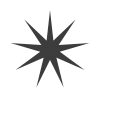

star
star(x, y, points=20, outer=100, inner=50, draw=True)
Draws a star to the screen. The first two parameters set the location, measured from the star's center. There are three optional parameters, that set the number of points, the outer radius and the inner radius (the fill radius).
 |
star(50, 50, 9, 80, 20) |
a path containing the star